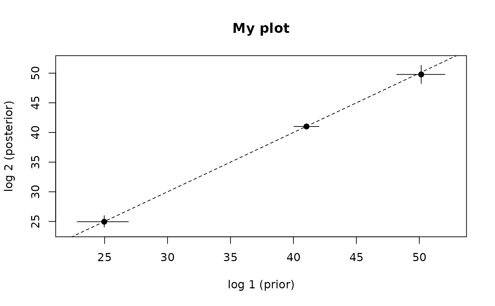

crossplot: Plot the mean/median and HPD interval bars for pairs of distributions
Source:R/crossplot.R
crossplot.Rdcrossplot: Plot the mean/median and HPD interval bars for pairs of distributions
Usage
crossplot(
log1,
log2,
skip.char = "#",
pattern = NULL,
stat = "median",
idx.cols = NULL,
bar.lty,
bar.lwd,
identity.lty,
identity.lwd,
extra.space = 0.5,
...
)Arguments
- log1
either a character vector of length 1 with the path to the first log file (e.g. prior node ages), or a dataframe with independent samples as rows and values to compare as columns (e.g. node IDs).
- log2
either a character vector of length 1 with the path to the second log file (e.g. posterior node ages), or a dataframe with independent samples as rows and values to compare as columns (e.g. node IDs).
- skip.char
character vector of length 1, with '#' as default value. Which symbol is used as a comment. This will allow to ignore lines which start with the symbol when reading data.
- pattern
character vector of length 1. the pattern for subsetting the columns containing the data to be plotted.
- stat
use mean or median of the distribution to plot. Median is used by default.
- idx.cols
either an integer vector with the position of the columns to pick, or a character vector with the column names to pick. Defaults to NULL.
- bar.lty
The line type to be used as error bars.
- bar.lwd
As above but the width
- identity.lty
The line type to be used in the identity y = x line
- identity.lwd
As above but the width.
- extra.space
numeric vector of length 1. How much space to be allowed in both xlim and ylim depending on the smallest value in highest density intervals plus or minus extra.space. A value of 0.5 units on the dimension of interest is used by default.
- ...
Optional arguments to be passed to `plot` such as `main`, `xlab`, `ylab`, `pch` and `cex`.
Details
The function produces a crossplot, which is a scatterplot where we are comparing two distributions associated to each point by means of the medians as the points, and the highest density intervals as bars around the point. For instance, x may represent the prior of a set of parameters while y represents the posterior. Error bars on the x axis then are highest density intervals from the prior, and those on the y axis represent the interval for the posterior.
This function can also be used to compare two independent runs for (visual) convergence: If they are sampling the same posterior distribution, then they should fall on the identity y=x line.
Examples
## Create log dataframes
log1 <- data.frame(sample=seq(from=1, to=10000, by = 100),
node1=rnorm(n =100, mean=41, sd=0.5),
node2=rnorm(n =100, mean=50, sd=1),
node3=rnorm(n =100, mean=25, sd=1))
log2 <- data.frame(sample=seq(from=1, to=10000, by = 100),
node1=rnorm(n =100, mean=41, sd=0.2),
node2=rnorm(n =100, mean=50, sd=0.8),
node3=rnorm(n =100, mean=25, sd=0.5))
## Run crossplot
crossplot(log1, log2, pattern="node", cols=NULL, stat="mean",
bar.lty=1, bar.lwd=1, identity.lty=2, identity.lwd=1,
extra.space=0.5, main="My plot", xlab="log 1 (prior)",
ylab="log 2 (posterior)", pch=19)

if (FALSE) { # \dontrun{
## Run crossplot over log files
crossplot(log1="log1.tsv", log2="log2.tsv", stat="median", skip.char="#",
pattern="par", cols=NULL, bar.lty=1, bar.lwd=1,
identity.lty=2, identity.lwd=1,
extra.space=0.5, main="My plot", xlab="log 1 (prior)",
ylab="log 2 (posterior)", pch=19)
} # }